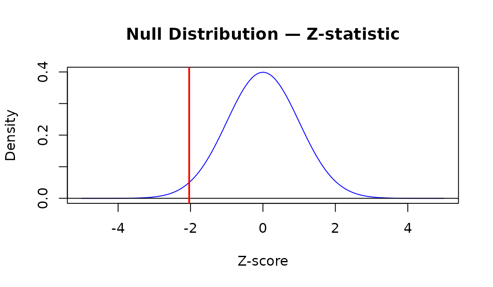
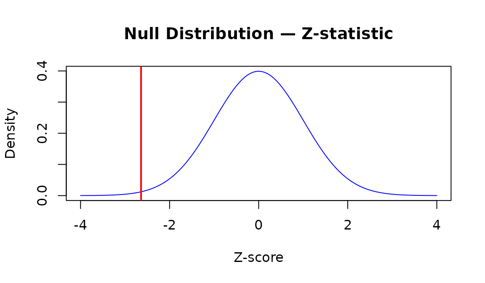
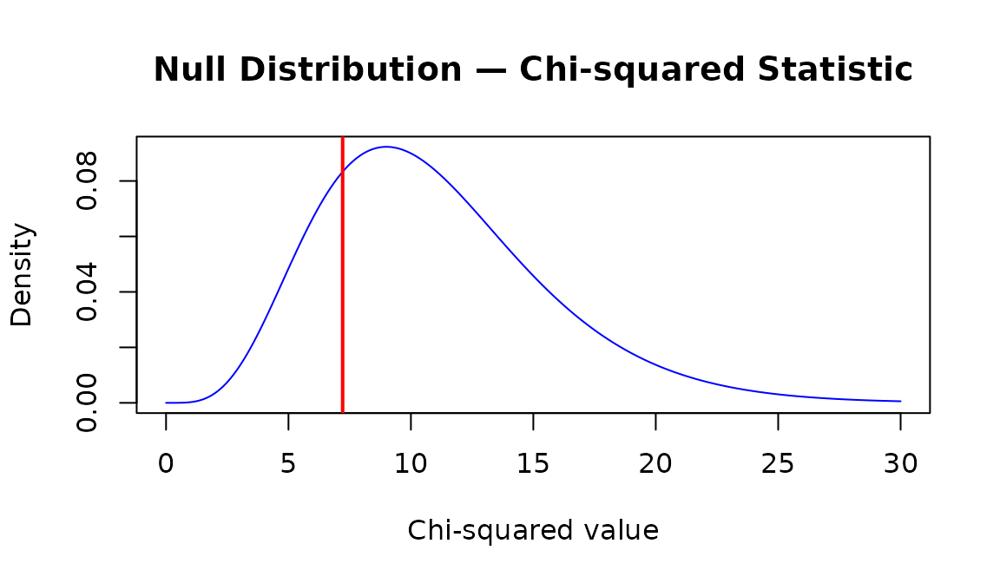
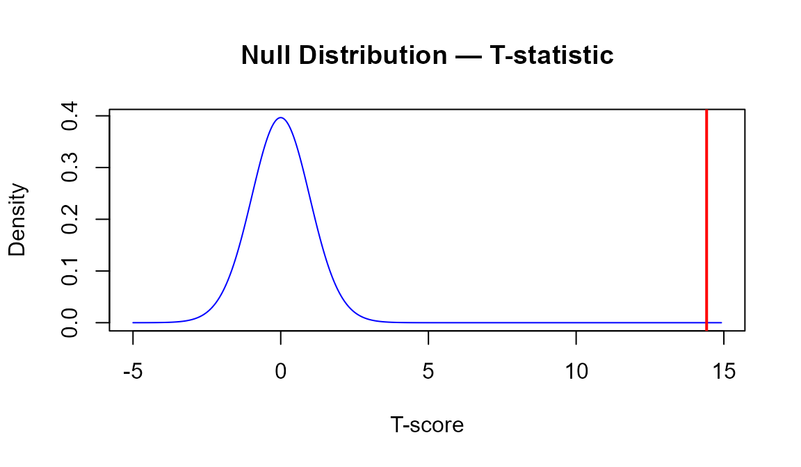
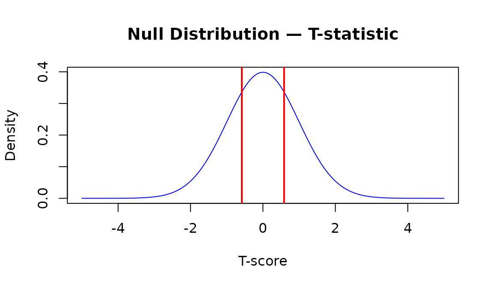
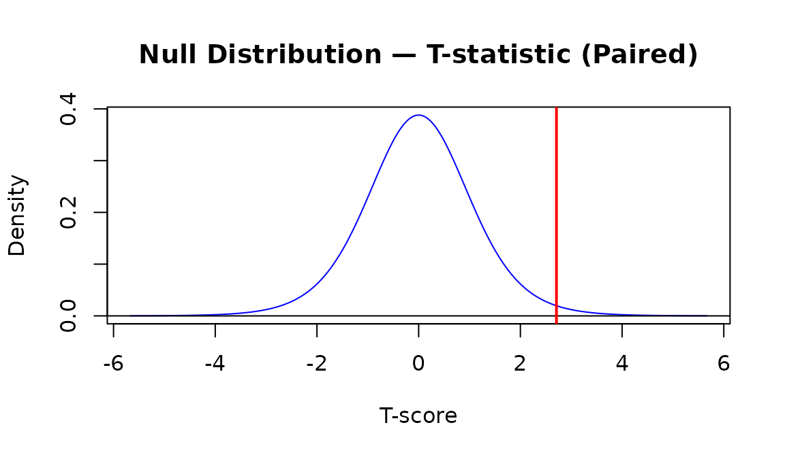
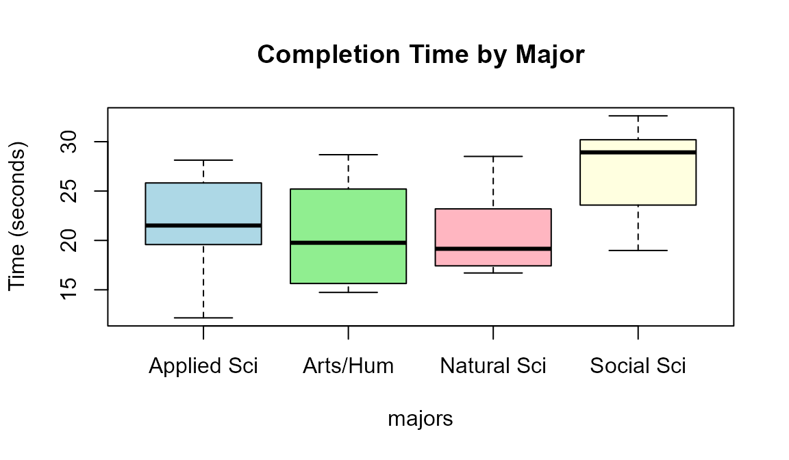
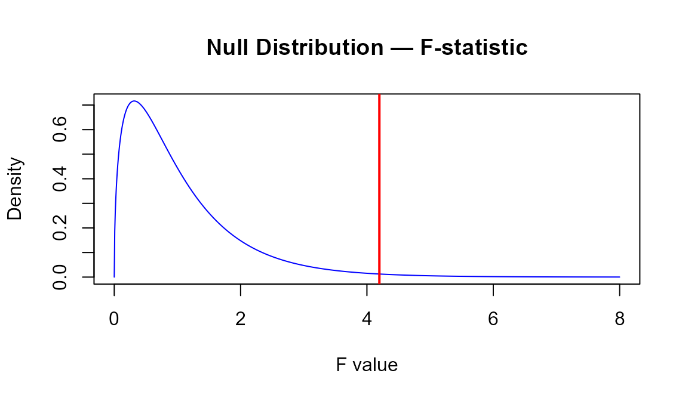
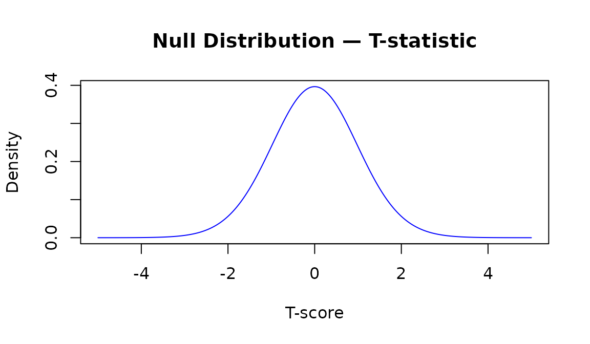
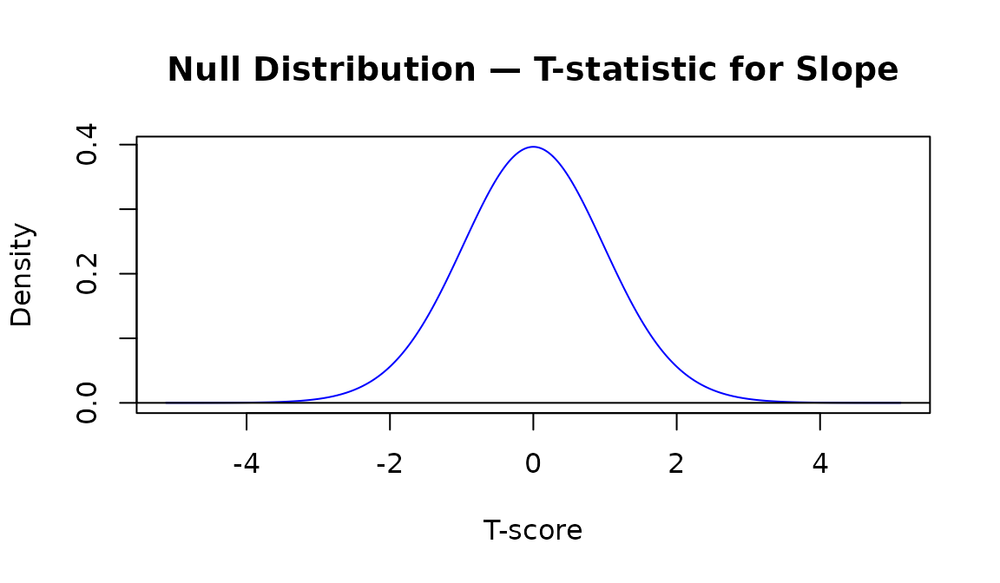

Parametric Hypothesis Tests
class-summary-parametric-tests.RmdOverview
This guide covers every parametric hypothesis test from S&DS 1000. Each test follows the same five steps used in class:
- State the null and alternative hypotheses
- Calculate the observed test statistic (and check conditions)
- Visualize the null distribution and mark the observed statistic
- Calculate the p-value
- Make a decision
In this article:
- One proportion
- Two proportions
- More than two proportions (chi-squared)
- One mean
- Two means — independent
- Two means — paired
- More than two means (ANOVA)
- Correlation
- Simple linear regression
- Quick reference table
Also in Class Summaries:
A note on assumptions. Parametric tests rely on mathematical approximations that are only valid when certain conditions are met (e.g., large enough sample sizes, approximate normality). Always check conditions before interpreting a p-value. The randomization methods from Parts 1 and 2 are more robust when conditions are uncertain.
One Proportion
When to use: One categorical variable with two outcomes; test whether the population proportion π equals a specific value π₀.
Conditions: and
Test statistic:
Example (class 20): From 1982–1994 there were 128 penalty shots in the World Cup. Goalkeepers correctly guessed the kick direction 41% of the time. Test whether goalies guessed correctly less than 50% of the time.
Steps 2–4: Calculate, visualize, p-value
# Step 2: Calculate the z-statistic
pi_0 <- 0.50
n <- 128
p_hat <- 0.41
# Check conditions
n * pi_0 # must be >= 10## [1] 64
n * (1 - pi_0) # must be >= 10## [1] 64
SE <- sqrt(pi_0 * (1 - pi_0) / n)
z_stat <- (p_hat - pi_0) / SE
z_stat## [1] -2.036468
# Step 3: Visualize the null distribution
x <- seq(-4, 4, length.out = 1000)
dens <- dnorm(x, mean = 0, sd = 1)
plot(x, dens, type = "l", col = "blue",
main = "Null Distribution — Z-statistic",
xlab = "Z-score", ylab = "Density")
abline(v = z_stat, col = "red", lwd = 2)
# Step 4: p-value (lower tail, H_A: pi < pi_0)
p_value <- pnorm(z_stat, mean = 0, sd = 1, lower.tail = TRUE)
p_value## [1] 0.02085172Two Proportions
When to use: A binary outcome measured in two independent groups; test whether the two population proportions are equal.
Conditions: At least 10 successes and 10 failures in each group.
Test statistic (using the unpooled standard error):
Example: In a clinical trial, 245 patients received a new vaccine and 255 received a placebo. Of the vaccinated group 32 got the flu; of the placebo group 56 got the flu. Test whether the vaccine reduces the proportion who get the flu.
Steps 2–4: Calculate, visualize, p-value
# Step 2: Calculate the z-statistic
n1 <- 245; x1 <- 32 # vaccinated
n2 <- 255; x2 <- 56 # placebo
p_hat1 <- x1 / n1
p_hat2 <- x2 / n2
# Check conditions (successes and failures >= 10 in each group)
c(x1, n1 - x1, x2, n2 - x2)## [1] 32 213 56 199
# Unpooled standard error
SE <- sqrt((p_hat1 * (1 - p_hat1) / n1) + (p_hat2 * (1 - p_hat2) / n2))
z_stat <- (p_hat1 - p_hat2) / SE
z_stat## [1] -2.64097
# Step 3: Visualize the null distribution
x <- seq(-4, 4, length.out = 1000)
dens <- dnorm(x, mean = 0, sd = 1)
plot(x, dens, type = "l", col = "blue",
main = "Null Distribution — Z-statistic",
xlab = "Z-score", ylab = "Density")
abline(v = z_stat, col = "red", lwd = 2)
# Step 4: p-value (lower tail, H_A: pi_1 < pi_2)
p_value <- pnorm(z_stat, mean = 0, sd = 1, lower.tail = TRUE)
p_value## [1] 0.004133447More Than Two Proportions
When to use: One categorical variable with three or more outcomes; test whether the observed counts match a set of expected proportions.
Conditions: Expected count in each cell
Test statistic:
Example (class 23/24): A Yale professor gathered birth months for 198 randomly selected Yale students. Are students equally likely to be born in any month?
Steps 2–4: Calculate, visualize, p-value
# Step 2: Calculate the chi-squared statistic
observed_counts <- c(14, 11, 21, 17, 15, 13, 19, 16, 18, 22, 14, 18)
names(observed_counts) <- month.abb
expected_counts <- rep(sum(observed_counts) / 12, 12)
# Check conditions: expected counts >= 5
expected_counts[1] # all equal ~16.5 ✓## [1] 16.5
chi_sq_stat <- sum((observed_counts - expected_counts)^2 / expected_counts)
chi_sq_stat## [1] 7.212121
# Step 3: Visualize the null distribution
df <- length(observed_counts) - 1 # k - 1 = 11
x <- seq(0, 30, length.out = 1000)
dens <- dchisq(x, df = df)
plot(x, dens, type = "l", col = "blue",
main = "Null Distribution — Chi-squared Statistic",
xlab = "Chi-squared value", ylab = "Density")
abline(v = chi_sq_stat, col = "red", lwd = 2)
# Step 4: p-value (always upper tail for chi-squared)
p_value <- pchisq(chi_sq_stat, df = df, lower.tail = FALSE)
p_value## [1] 0.7816545One Mean
When to use: One quantitative variable; test whether the population mean μ equals a specific value μ₀.
Conditions: , or the population is approximately normal.
Test statistic:
Example (class 21): Air Force cadets tested 42 bags of Chips Ahoy! cookies and found a mean of 1261.6 chips, sd = 117.6. Test whether the mean exceeds 1000.
Steps 2–4: Calculate, visualize, p-value
# Step 2: Calculate the t-statistic
n <- 42
x_bar <- 1261.6
s <- 117.6
mu_0 <- 1000
SE <- s / sqrt(n)
t_stat <- (x_bar - mu_0) / SE
t_stat## [1] 14.41634
# Step 3: Visualize the null distribution
df <- n - 1
x <- seq(-5, max(t_stat + 0.5, 5), length.out = 1000)
dens <- dt(x, df = df)
plot(x, dens, type = "l", col = "blue",
main = "Null Distribution — T-statistic",
xlab = "T-score", ylab = "Density")
abline(v = t_stat, col = "red", lwd = 2)
# Step 4: p-value (upper tail, H_A: mu > mu_0)
p_value <- pt(t_stat, df = df, lower.tail = FALSE)
p_value## [1] 5.956987e-18Two Means: Independent Samples
When to use: A quantitative variable measured in two independent groups; test whether the group means are equal.
Conditions: Each group has , or both populations are approximately normal.
Test statistic (Welch’s t-test — does not assume equal variances):
Example (class 22): A study of 2295 American men found that right-handers (n = 2027) earned $13.10/hr and left-handers (n = 268) earned $13.40/hr, both with sd = $7.90. Test whether there is a difference in earnings.
Steps 2–4: Calculate, visualize, p-value
# Step 2: Calculate the t-statistic
n1 <- 2027; x_bar1 <- 13.10; s1 <- 7.90 # right-handed
n2 <- 268; x_bar2 <- 13.40; s2 <- 7.90 # left-handed
SE_diff <- sqrt((s1^2 / n1) + (s2^2 / n2))
t_stat <- (x_bar1 - x_bar2) / SE_diff
t_stat## [1] -0.5842478
# Step 3: Visualize the null distribution
df <- min(n1 - 1, n2 - 1)
x <- seq(-5, 5, length.out = 1000)
dens <- dt(x, df = df)
plot(x, dens, type = "l", col = "blue",
main = "Null Distribution — T-statistic",
xlab = "T-score", ylab = "Density")
abline(v = t_stat, col = "red", lwd = 2)
abline(v = -t_stat, col = "red", lwd = 2) # two-sided: mark both tails
## [1] 0.5595469Two Means: Paired Samples
When to use: Observations come in natural pairs (e.g., before/after on the same subject). Compute the within-pair differences and run a one-sample t-test on them.
Test statistic:
Example (class 22): Exam scores for 10 students on Exam 1 and Exam 2. Test whether students scored higher on Exam 2 on average.
Steps 2–4: Calculate, visualize, p-value
# Step 2: Calculate the t-statistic on the differences
exam1 <- c(72, 95, 56, 87, 80, 98, 74, 85, 77, 62)
exam2 <- c(78, 96, 72, 89, 80, 95, 86, 87, 82, 72)
d <- exam2 - exam1
n <- length(d)
SE_d <- sd(d) / sqrt(n)
t_stat <- mean(d) / SE_d
t_stat## [1] 2.709344
# Step 3: Visualize the null distribution
df <- n - 1
x <- seq(-5, 5, length.out = 1000)
dens <- dt(x, df = df)
plot(x, dens, type = "l", col = "blue",
main = "Null Distribution — T-statistic (Paired)",
xlab = "T-score", ylab = "Density")
abline(v = t_stat, col = "red", lwd = 2)
# Step 4: p-value (upper tail, H_A: mu_d > 0)
p_value <- pt(t_stat, df = df, lower.tail = FALSE)
p_value## [1] 0.01201164More Than Two Means: ANOVA
When to use: A quantitative variable measured across three or more independent groups; test whether all group means are equal.
Conditions: Approximately normal residuals; roughly equal variance across groups; independent observations.
Test statistic:
A large F means between-group variation is large relative to
within-group variation. get_F_stat() in SDS1000 is a thin
wrapper around aov(); calling aov() directly
gives the full test result.
Example (class 24): Hope College students were timed completing a Sudoku-like puzzle. Majors were grouped into four categories. Is mean completion time the same across majors?
Steps 2–4: Calculate, visualize, p-value
# Step 2: Load data and calculate the F-statistic
set.seed(4455)
completion_times <- c(rnorm(10, mean = 22, sd = 5),
rnorm(10, mean = 20, sd = 5),
rnorm(10, mean = 26, sd = 5),
rnorm(10, mean = 21, sd = 5))
majors <- factor(rep(c("Applied Sci", "Natural Sci", "Social Sci", "Arts/Hum"),
each = 10))
# Visualize the data
boxplot(completion_times ~ majors,
main = "Completion Time by Major",
ylab = "Time (seconds)",
col = c("lightblue", "lightgreen", "lightpink", "lightyellow"))
# Fit the model and extract the F-statistic
fit <- aov(completion_times ~ majors)
fit_sum <- summary(fit)
fit_sum## Df Sum Sq Mean Sq F value Pr(>F)
## majors 3 281.7 93.89 4.197 0.012 *
## Residuals 36 805.4 22.37
## ---
## Signif. codes: 0 '***' 0.001 '**' 0.01 '*' 0.05 '.' 0.1 ' ' 1
f_stat <- fit_sum[[1]]$`F value`[1]
df1 <- fit_sum[[1]]$Df[1]
df2 <- fit_sum[[1]]$Df[2]
# Step 3: Visualize the null distribution
x <- seq(0, 8, length.out = 1000)
dens <- df(x, df1 = df1, df2 = df2)
plot(x, dens, type = "l", col = "blue",
main = "Null Distribution — F-statistic",
xlab = "F value", ylab = "Density")
abline(v = f_stat, col = "red", lwd = 2)
# Step 4: p-value (always upper tail for F)
p_value <- pf(f_stat, df1 = df1, df2 = df2, lower.tail = FALSE)
p_value## [1] 0.01204589Step 5: Make a decision and follow-up
p = 0.012: we reject H₀ — at least one group mean differs.
If
is rejected, use TukeyHSD() to find which
groups differ while controlling for multiple comparisons:
TukeyHSD(fit)## Tukey multiple comparisons of means
## 95% family-wise confidence level
##
## Fit: aov(formula = completion_times ~ majors)
##
## $majors
## diff lwr upr p adj
## Arts/Hum-Applied Sci -0.9575406 -6.6544184 4.739337 0.9686795
## Natural Sci-Applied Sci -0.7868728 -6.4837506 4.910005 0.9821522
## Social Sci-Applied Sci 5.4899260 -0.2069518 11.186804 0.0623807
## Natural Sci-Arts/Hum 0.1706678 -5.5262100 5.867546 0.9998080
## Social Sci-Arts/Hum 6.4474666 0.7505888 12.144344 0.0213677
## Social Sci-Natural Sci 6.2767988 0.5799210 11.973677 0.0260839Correlation
When to use: Two quantitative variables; test whether the linear association (correlation) between them is significantly different from zero.
Conditions: Both variables are approximately normal, or is large enough that the CLT applies; the relationship is linear.
Test statistic:
Example (class 25): Data on cigarette consumption per capita and lung cancer rates across 44 U.S. states. Is there evidence of a positive linear association?
Steps 2–4: Calculate, visualize, p-value
# Data simulated to match the class 25 states_smoking dataset
set.seed(2947)
cigs_per_capita <- runif(44, min = 10, max = 45)
cancer_rate <- 2 + 0.005 * cigs_per_capita * 1000 + rnorm(44, sd = 5)
# Visualize the data
plot(cigs_per_capita, cancer_rate,
xlab = "Cigarettes per Capita (hundreds)",
ylab = "Lung Cancer Rate per 100,000",
main = "Lung Cancer Rate vs. Cigarette Consumption")
# Step 2: Calculate the t-statistic
n <- length(cigs_per_capita)
r <- cor(cigs_per_capita, cancer_rate)
r## [1] 0.9945126## [1] 61.60758
# Step 3: Visualize the null distribution
df <- n - 2
x <- seq(-5, 5, length.out = 1000)
dens <- dt(x, df = df)
plot(x, dens, type = "l", col = "blue",
main = "Null Distribution — T-statistic",
xlab = "T-score", ylab = "Density")
abline(v = t_stat, col = "red", lwd = 2)
# Step 4: p-value (upper tail, H_A: rho > 0)
p_value <- pt(t_stat, df = df, lower.tail = FALSE)
p_value## [1] 4.094627e-43Step 5: Make a decision
Since p = 0, we reject and conclude that there is a significant positive linear association between cigarette consumption and lung cancer rate.
Shortcut:
cor.test(x, y, alternative = "greater") performs all of
steps 2–4 in one call and returns the same t-statistic, df, and
p-value.
Simple Linear Regression
When to use: Two quantitative variables where you want to model y as a linear function of x and test whether the slope is significantly different from zero. Testing H₀: β₁ = 0 is equivalent to testing H₀: ρ = 0 — they yield identical t-statistics and p-values.
Conditions: Linear relationship; approximately normal residuals; constant variance (homoscedasticity); independent observations.
Test statistic for the slope:
Example (class 25): Using the same cigarette/lung cancer data, fit a regression model and test whether the slope is significantly positive.
Steps 2–4: Fit the model, visualize, p-value
# Fit the linear model (using same data from correlation section above)
lung_lm <- lm(cancer_rate ~ cigs_per_capita)
# Step 2: summary() reports the t-statistic and two-sided p-value for each coefficient
summary(lung_lm)##
## Call:
## lm(formula = cancer_rate ~ cigs_per_capita)
##
## Residuals:
## Min 1Q Median 3Q Max
## -9.1802 -3.8251 0.3541 4.0038 10.7198
##
## Coefficients:
## Estimate Std. Error t value Pr(>|t|)
## (Intercept) 2.97304 2.31498 1.284 0.206
## cigs_per_capita 4.99792 0.08113 61.608 <2e-16 ***
## ---
## Signif. codes: 0 '***' 0.001 '**' 0.01 '*' 0.05 '.' 0.1 ' ' 1
##
## Residual standard error: 5.237 on 42 degrees of freedom
## Multiple R-squared: 0.9891, Adjusted R-squared: 0.9888
## F-statistic: 3795 on 1 and 42 DF, p-value: < 2.2e-16Reading the Coefficients table:
| Column | Meaning |
|---|---|
Estimate |
Fitted intercept (β̂₀) and slope (β̂₁) |
Std. Error |
Standard error of each estimate |
t value |
t-statistic testing H₀: coefficient = 0 |
Pr(>|t|) |
Two-sided p-value |
# Step 3: Visualize the null distribution and the observed t-statistic
# (The t-stat and df for the slope are extracted from the model summary)
fit_sum <- summary(lung_lm)
t_stat <- fit_sum$coefficients["cigs_per_capita", "t value"]
df <- lung_lm$df.residual # n - 2
x <- seq(-5, 5, length.out = 1000)
dens <- dt(x, df = df)
plot(x, dens, type = "l", col = "blue",
main = "Null Distribution — T-statistic for Slope",
xlab = "T-score", ylab = "Density")
abline(v = t_stat, col = "red", lwd = 2)
# Step 4: p-value (upper tail; summary() reports two-sided, so divide by 2)
p_two_sided <- fit_sum$coefficients["cigs_per_capita", "Pr(>|t|)"]
p_value <- p_two_sided / 2 # one-sided upper-tail p-value
p_value## [1] 4.094627e-43Step 5: Make a decision
Since p = 0 < 0.05, we reject and conclude that there is a significant positive relationship between cigarette consumption and lung cancer rate.
Confidence interval for the slope
confint() gives theory-based confidence intervals for
each coefficient — the parametric alternative to the bootstrap CI from
class 25:
confint(lung_lm, level = 0.90) # 90% CI, as used in class 25## 5 % 95 %
## (Intercept) -0.9206509 6.866724
## cigs_per_capita 4.8614732 5.134370Quick Reference
| Test | H₀ | Statistic | df | p-value function |
|---|---|---|---|---|
| One proportion | — | pnorm(z_stat, lower.tail = ...) |
||
| Two proportions | — | pnorm(z_stat, lower.tail = ...) |
||
| Multiple proportions | pchisq(chi_sq, df, lower.tail=FALSE) |
|||
| One mean | pt(t_stat, df, lower.tail = ...) |
|||
| Two means (indep.) | pt(t_stat, df, lower.tail = ...) |
|||
| Two means (paired) | pt(t_stat, df, lower.tail = ...) |
|||
| Multiple means | , | pf(f_stat, df1, df2, lower.tail=FALSE) |
||
| Correlation | pt(t_stat, df, lower.tail = ...) |
|||
| Regression slope |
summary(lm(...)) or
pt(t_stat, df, ...)
|